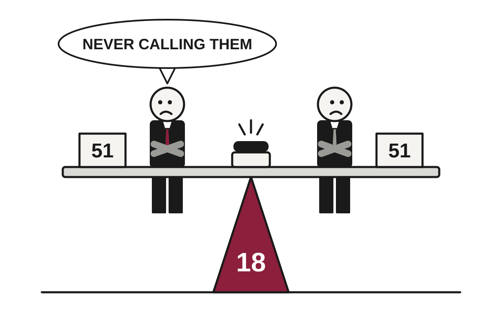

5 Things in 60 Seconds
- Israel's exit polls split the Knesset 51 seats each for Netanyahu's bloc and Eisenkot's opposition, both short of the 61 needed, leaving Arab-led parties on 18 seats as kingmakers and both sides free to declare victory.
- A localized ceasefire mediated by Melania Trump and Pope Leo XIV has spread from Oleshky across Ukraine's Kherson region, with no breaches reported so far and evacuations planned for Friday, proving quiet is possible when enough people are watching.
- Anthropic has filed to list on Nasdaq under ANT, disclosing $11.6 billion in quarterly revenue and its first GAAP operating profit of $974 million, along with the usual warnings that it could be wrong about nearly everything.
- The 10-year Treasury yield has climbed above 5% as the U.S. posted a $1.992 trillion deficit for fiscal 2026, a combination that makes mortgages more expensive and fiscal targets more theoretical.
- A New Mexico judge ordered Meta to pay $25 billion over data-privacy claims that most other states settled for $459 million, which has prompted some awkward arithmetic among attorneys general.

Israel Votes, Produces Two Equal Blocs and a Kingmaker Both Swore Not to Call
Exit polls project 51 seats each for Netanyahu's bloc and Eisenkot's opposition, short of the 61 needed, with Arab-led parties on 18 seats and record turnout.
The wire said: Israel election results: No clear winner projected, what’s next? · Al Jazeera
Israelis voted on Tuesday, and according to exit polls released by the major television networks, they split almost perfectly in half. Al Jazeera reported that the coalition led by Prime Minister Benjamin Netanyahu's Likud and the opposition bloc led by Gadi Eisenkot's Yashar party were each projected to win 51 of the Knesset's 120 seats. A majority requires 61. Arithmetic, as usual, remains undefeated.
Translation: nobody won, but two groups of people are free to say they did. Eisenkot said the results show a lack of confidence in Netanyahu, while opposition leader Yair Lapid called it a crushing defeat for the prime minister's bloc. Foreign Minister Gideon Saar, of Likud, called the celebrations premature and noted that Likud is the largest party in Israel.
Geopolitics
Defeated Brazilian Candidate Reportedly Leaves Country, Passport Having Been Cancelled, Which Is Not How Passports Work
Flávio Bolsonaro, who lost Sunday's election to Lula with 48.21% of the vote, is reportedly bound for Florida to seek asylum while a money-laundering probe continues at home.
Flávio Bolsonaro, the far-right senator who lost Brazil's presidential election on Sunday, has reportedly left the country and is headed to the United States, according to The Guardian, citing reports from the news site Metrópoles and the newspaper Folha de S Paulo. Allies told Metrópoles he would land in Florida on Tuesday afternoon and request political asylum. A US state department spokesperson said he and his family would be granted visas to enter the country, so at least one bureaucracy is moving quickly.
The sequence matters. Bolsonaro lost on Sunday, and a supreme court justice cancelled his passport minutes after the result, in a case where federal police are investigating possible involvement in a money-laundering scheme worth about £680m ($905m) involving betting companies. Translation: a court told him to hand over his travel document, which is the legal equivalent of asking someone to leave their car keys at the door. He had until 11am Tuesday to comply and did not appear.
Ceasefire Brokered by First Lady and Pope Holds Across Kherson, Mostly Because Everyone Is Watching
A truce meant to feed about 2,000 people trapped in Oleshky has widened to the whole Kherson region, with evacuations planned for Friday and no agreement on where evacuees will end up.
Finland and Norway Phone Putin for 90 Minutes, Agree Mainly to Phone Again
The two Nordic leaders say they spoke only for themselves, a distinction Europe's other leaders were eager to note, and the Kremlin called the talks constructive.
Britain Sanctions 15 Sudanese Commanders a Year After El Fasher, Pending Further Anniversaries
The UK has imposed travel bans and asset freezes on commanders from both the RSF and the army, as drone strikes knock out power across eastern Sudan.
Elsewhere on the wire
Myanmar: Is the US undermining the EU's diplomatic blockade? DWNetanyahu, Eisenkot camps clash over Israel election projections Al JazeeraUS forces accused of ‘weaponising’ Somalia’s floods by trapping women and children in the path of El Niño The GuardianWill elections in Israel change its Iran approach? DWMbappé sorry for 'ill-judged' Mao remark after backlash in China BBC WorldIsrael’s Eisenkot says country voted for change Al JazeeraAI
OpenAI Claims AI Disproved Core Computing Assumption, Asks Humans to Please Check
Three claimed breakthroughs in math, computer science and physics arrive with a new release method: outside 'shepherds' to work out whether any of it is true.
OpenAI said it has produced, with its internal models, proofs in three fields: a wave-equation conjecture in math, a refutation of the Exponential Time Hypothesis in computer science, and an existence proof for certain quantum field theories in physics. According to The Verge and The Decoder, the company calls the manuscripts a kind of raw research data. This is a candid description, since the usual term for an unchecked result is 'claim.'
The computer science result is the one drawing attention. The Exponential Time Hypothesis, or ETH, says that solving a certain class of logic puzzles (SAT, in which you try to make a formula come out true) takes time that grows exponentially as variables are added. Translation: there is no clever shortcut, and each new variable roughly doubles the work. The Decoder notes that 100 variables already yields a 31-digit number of combinations. OpenAI says its algorithm counts solutions in subexponential time, which would refute the hypothesis.
Google's Genie 4 Builds Whole Worlds That Stay Coherent for Two Minutes
DeepMind's new world model adds audio, better physics and mid-simulation edits, though the worlds still forget how they started.
Parents Sue OpenAI, Say Chatbot Treated Seizure Medication as a Suggestion
A lawsuit over the death of a 31-year-old Amazon engineer argues that medication advice deserved a hard rule, not a default users can override.
Nvidia Invests $3 Billion in Meta, Which Plans to Spend It on Nvidia
The chipmaker is buying into Meta's stock sale as Meta seeks up to $95 billion to fund its AI buildout, much of it for Nvidia hardware.
Elsewhere on the wire
VCs will make billions on Anthropic’s IPO, but Amazon is set to make much (much) more TechCrunch AIResearchers are getting tired of OpenAI gatekeeping its breakthroughs The Verge AIAlibaba's latest Qwen models routed some requests through company servers, researchers find The Decoder"No human at the helm": Delaware plan would let AI agents run entire businesses Ars Technica AIVisionQuest is what happens when AI really goes rogue The Verge AIIndustrial Intelligence: The next growth opportunity for manufacturing MIT Technology ReviewTechnology

Meta Loses $25 Billion in New Mexico, Making 50 Other States Check Their Receipts
A New Mexico judge ordered Meta to pay $25 billion over privacy claims that most other states settled for $459 million, prompting some awkward arithmetic among attorneys general.
A New Mexico judge has ordered Meta to pay $25 billion over claims that the company misled users about protecting their data and policing misinformation and hate speech, according to The Verge. The claims stem from the 2018 Cambridge Analytica scandal and related incidents. The sum is larger than the $17 billion multistate settlement announced this summer, which until last week was the number people used when they wanted to say unprecedented.
The comparison is awkward for the states that settled. The Verge reported that in most of them, the Cambridge Analytica-style claims were covered by a section of the kids online safety settlement, resolved with a $459 million payment. Translation: some attorneys general sold a particular claim for about $459 million, and a neighboring state has just been awarded $25 billion for what looks like the same kind of claim.
Sixteen-Year-Old Bug in Server Boot Code Finally Introduced to Public, Along With Its Patch

A 9.5-severity flaw in the open source firmware code behind most servers leaked early, after a hardware maker published the fix before the coordinated disclosure.
Musk Says Ukraine Broke Starlink Rules; Ukraine Says Physics Already Did the Job
After a throttling that disrupted drone operations, SpaceX's owner alleged offensive use of the service, while Ukrainian officials say the commercial version cannot technically do what he describes.
Apple Updates iMac and MacBook Pro With M6 Chip, Skips M5 Entirely
The iMac jumps from the M4 straight to the M6, while the entry-level 14-inch MacBook Pro gets a single chip option and a larger storage ceiling.
Elsewhere on the wire
Researchers are getting tired of OpenAI gatekeeping its breakthroughs The Verge'An annoying buzz': The search for stealthier drones BBC TechnologyGit for US Legislation Hacker NewsSouth Carolina's measles outbreak jumped to Washington state 5 times in 2 weeks Ars TechnicaMoxnox 1.0: NT-Like, POSIX-Compatible OS Running Atop Btrfs Hacker NewsChina's top-secret spaceplane can't hide in low-Earth orbit Ars TechnicaMarkets & Economy
Boeing Beats Quarter, Misses Future, and Investors Choose to Sell the Future
Boeing's stock fell 10% after it pushed its $10 billion free cash flow target to 2029 and said 737 Max output will not hit 52 a month until late 2027.
Boeing shares fell 10% on Tuesday after the company reported third-quarter results and then described what the next three years of cash will look like. According to CNBC, the stock hit a fresh 52-week low and was on pace for its worst day since the April 2025 tariff panic. The quarter itself was fine. The forecast was the problem, which is a common arrangement in markets, where the past is a receipt and the future is the invoice.
The quarter, briefly: revenue rose 4% to $24.19 billion, ahead of the $23.84 billion analysts expected, per LSEG. The adjusted loss was 34 cents a share, worse than the expected 21 cents. Free cash flow was $464 million, up from $238 million a year earlier and above the $330 million FactSet consensus. Translation: free cash flow is the cash left after a company pays to run and build things, and with Boeing not yet reliably profitable, it is the number investors watch most.
Then came the outlook. Boeing expects $3 billion of free cash flow in 2027 against a consensus of $5.7 billion, and $6 billion in 2028 against $9.6 billion. It still reaches its $10 billion annual target in 2029, but CNBC's analysis notes that is a year later than Wall Street had modeled, and the 2029 consensus was $12.9 billion. Part of the 2027 shortfall comes from extra spending to support the Navy's next-generation F/A-XX fighter contract, which Boeing won in September. Winning a large contract means paying up front for the privilege.
SK Hynix Earns 83 Trillion Won in a Quarter, Then Gives Much of It Back
The South Korean memory maker posted record third-quarter profit and promised about 100 trillion won to shareholders, as AI demand keeps outrunning the supply of chips.
Corporate America Finds Consumer 'Resilient,' Mostly Because the Word Is Free
Third-quarter earnings from Coca-Cola, UPS and Royal Caribbean point to steady spending, while Whirlpool and Sherwin-Williams report something closer to endurance.
Administration Eases Russian Diesel Sanctions to Lower Pump Prices Before Tuesday's Midterms
A deal with Moscow will add roughly 75,000 to 124,000 barrels a day to a market that burns 28 million, which analysts say will not materially lower prices.
| Series | Last | Chg | Period | Trend |
|---|---|---|---|---|
| SPY | $769.66 | +0.56% | +3.89% | |
| Nasdaq | 26,169.38 | +0.82% | +4.78% | |
| VIX | 18.39 | −1.06 | −0.28 | |
| Brent crude | $115.22 | −3.03% | +32.45% | |
| Dollar index | 121.32 | −0.03% | +0.62% | |
| 2Y Treasury | 4.68% | −0.01 | +0.31 | |
| 10Y Treasury | 5.00% | ±0.00 | +0.29 | |
| Fed Funds | 3.88% | ±0.00 | +0.25 | |
| CPI inflation (YoY) | 3.74% | +0.34 | +1.30 | |
| Unemployment | 4.20% | +0.10 | +0.10 |
Elsewhere on the wire
World Bank's Banga: Availability of capital 'not really an issue' as AI demand drives up borrowing costs CNBC EconomyA leading Silicon Valley cheerleader just showed all the reasons to be worried about the AI bubble MarketWatchOpenAI plans to buy Google AI chips to expand computing capacity - The Information Investing.comIsrael election appears to have no clear winner with Netanyahu, opponent Eisenkot far short of majorities CNBC MarketsRetail traders buy the dip on chip stocks — but Robinhood gets burned by the crypto market MarketWatchNearly 90% of businesses are turning to tokenised money, DBS survey shows Investing.comPhoto credits
- Meta Loses $25 Billion in New Mexico, Making 50 Other States Check Their Receipts: Courtroom One Gavel - Flickr - Joe Gratz by Joe Gratz, CC0, via Wikimedia Commons
- Sixteen-Year-Old Bug in Server Boot Code Finally Introduced to Public, Along With Its Patch: Half filled server racks by Alexis Lê-Quôc from New York, United States, CC BY-SA 2.0, via Wikimedia Commons